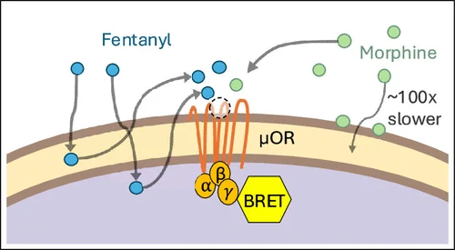
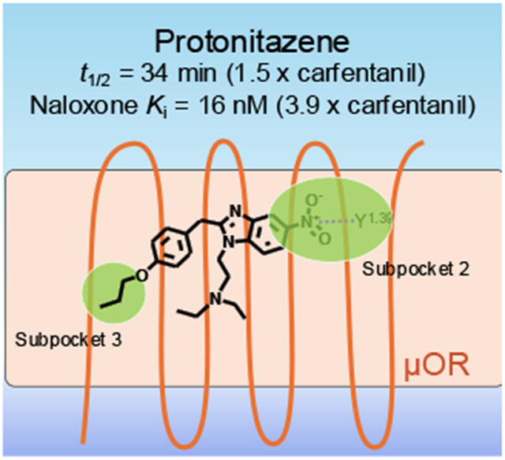
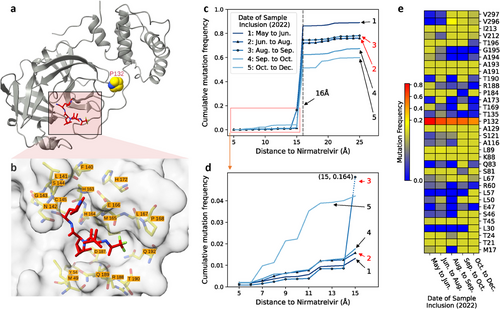
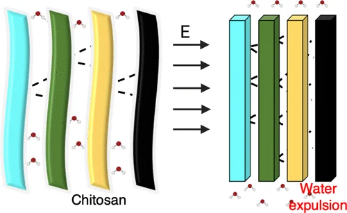
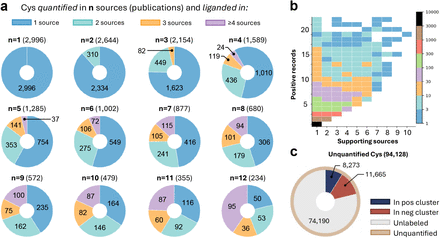
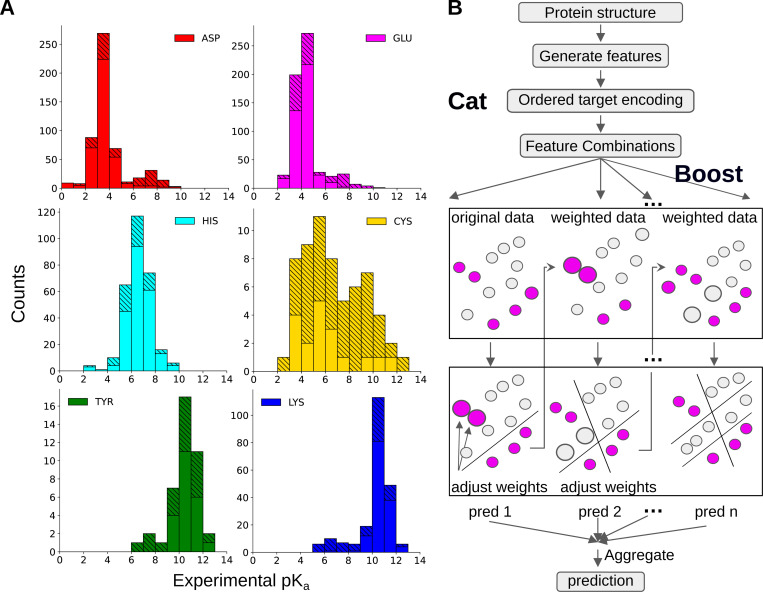
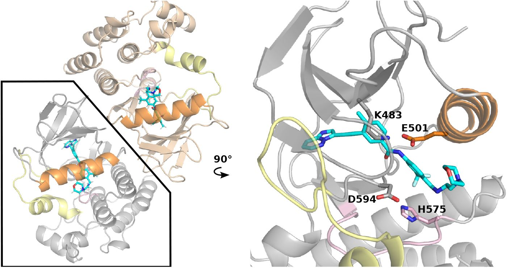
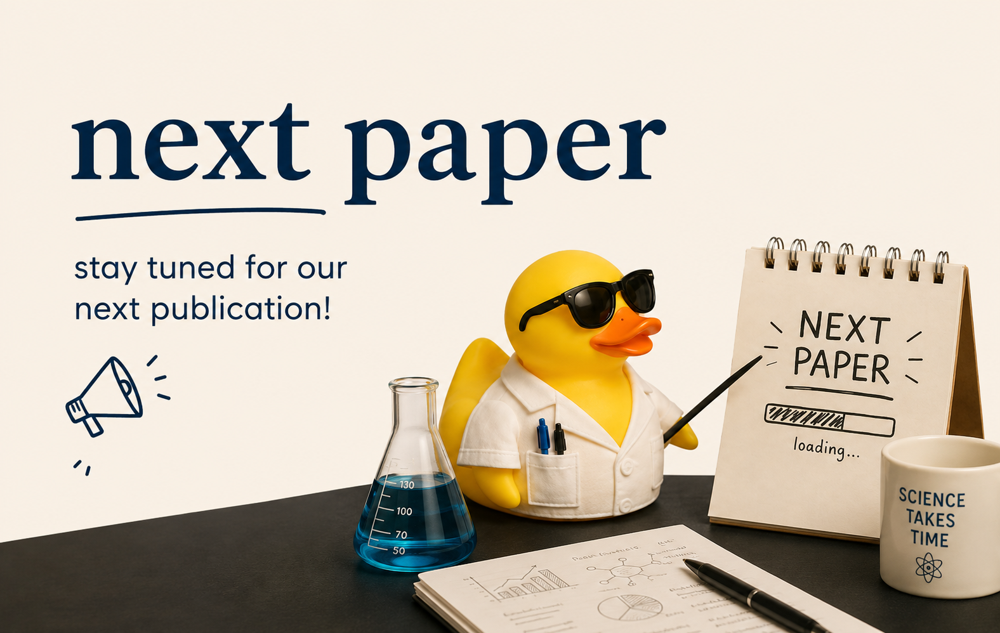

Membrane Permeability Drives the Extreme Potency of Fentanyl
Rapid membrane penetration creates a drug reservoir, increasing fentanyl potency and prolonging opioid signaling.
Open paper ↗Computational chemistry · biophysics · AI
We develop simulation and data-science methods that reveal how protonation, structure, and dynamics shape biological function—and use those insights to advance drug and materials design.
Latest research
Recent publications spanning molecular pharmacology, machine learning, and responsive materials.

Rapid membrane penetration creates a drug reservoir, increasing fentanyl potency and prolonging opioid signaling.
Open paper ↗
Nitazenes bind opioid receptors unusually long, making overdoses harder to reverse with naloxone.
Open paper ↗
AI predicts Paxlovid-resistant SARS-CoV-2 mutations before they become widespread.
Open paper ↗
Electric fields reorganize chitosan nanofibers by expelling water between molecular sheets.
Open paper ↗
AI identifies drug-binding sites directly from protein sequences, expanding drug discovery.
Open paper ↗
Machine learning rapidly predicts protein pKa values and ionization states with high accuracy.
Open paper ↗
Simulations explain why some BRAF inhibitors bind dimers more selectively and cooperatively.
Open paper ↗
Stay tuned!
View all publications →The laboratory
Molecules exchange protons, reorganize water, shift electrostatic networks, and move between functional states. Those changes can determine whether a protein transports an ion, recognizes a drug, or assembles into a material.
The Shen Group develops computational approaches that model these coupled events. Based in Pharmaceutical Sciences at the University of Maryland, our team works at the intersection of chemistry, biology, physics, medicine, computer science, and engineering.
Research platform
Our work moves between foundational method development and applications where protonation, dynamics, and molecular recognition matter.
Method development
Building practical pH-control methods for atomistic simulations in Amber and CHARMM.
Explore CpHMD →Ionization
Predicting protonation states in proteins, ligands, enzymes, and dynamic environments.
Explore pKa science →Membrane systems
Resolving recognition, activation, and proton-coupled transport at molecular resolution.
Explore membrane research →Therapeutics
Combining simulation, quantum descriptors, and machine learning for inhibitor discovery.
Explore drug design →Soft matter
Understanding responsive polysaccharides, hydrogels, self-assembly, and electric-field control.
Explore materials →Why it matters
By allowing protonation and conformation to evolve together, our methods uncover mechanisms that are difficult to observe experimentally and inaccessible to fixed-protonation simulations.
Explain pH-dependent protein function and molecular recognition.
Identify reactive and ligandable sites for covalent drug discovery.
Connect molecular interactions to responsive material properties.
Recent publications
JACS Au
Open paper ↗ 2025Machine learning · pKaJournal of Chemical Theory and Computation
Open paper ↗ 2025Responsive materialsACS Applied Nano Materials
Open paper ↗Join the Shen Lab
We welcome researchers who enjoy working across disciplinary boundaries and building methods that make new science possible.